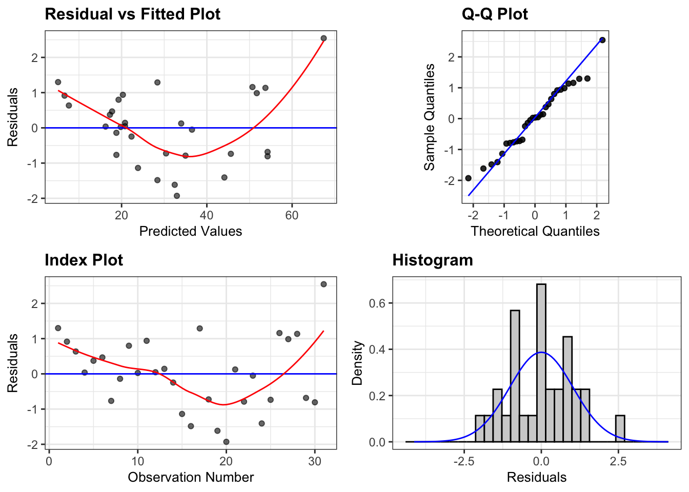
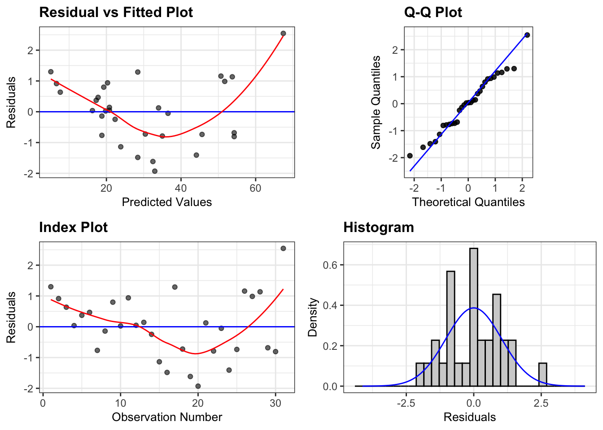

# Fit a linear model
lm_model1 <- lm(Volume ~ Girth, data = trees)
# Use the resid_panel function from ggResidpanel to create a panel of diagnostics plots
ggResidpanel::resid_panel(lm_model1)
Below are descriptions of R packages that I’ve developed.

ggResidpanel is an R package Katie Rey and I developed for creating panels of diagnostic plots for residuals from a model using ggplot2. It also allows for the creation of interactive versions of the plots using plotly. The package ic available on CRAN. An overview of the package can be found at this website. The source code can be found in the GitHub repository.
Here is an example panel of diagnostic plots created using ggResidpanel.
# Fit a linear model
lm_model1 <- lm(Volume ~ Girth, data = trees)
# Use the resid_panel function from ggResidpanel to create a panel of diagnostics plots
ggResidpanel::resid_panel(lm_model1)

limeaid is an R package for assessing explanations created using the R package lime. The current implementation was developed to be used with classification models with a binary response and continuous features. The package can be installed from GitHub, and additional information on limeaid is available on the GitHub repository.
Example of a feature heatmap depicting LIME explanation across various tuning parameters for a random forest fit to the iris data.
library(limeaid)
library(randomForest)
# Iris training and testing
iris_test <- iris[1:5, 1:4]
iris_train <- iris[-(1:5), 1:4]
iris_lab <- iris[[5]][-(1:5)]
# Fit a random forest model to the iris training data
set.seed(20200334)
rf <- randomForest(Species ~ .,
data = cbind(iris_train,
Species = iris_lab))
# Run apply_lime on the iris data
lime_applied <- apply_lime(
train = iris_train,
test = iris_test,
model = rf,
label = "virginica",
n_features = 2,
sim_method = c('quantile_bins',
'equal_bins',
'kernel_density'),
nbins = 2:4,
gower_pow = c(1, 5),
return_perms = TRUE,
seed = 20200334
)
# Extract the explanations from the apply_lime output
explanations <- lime_applied$explain
# Create a heatmap of the features chosen
plot_feature_heatmap(explanations)
redres is an R package developed to help with diagnosing linear mixed models fit using the function lmer from the lme4 package. It is meant to supplement the lme4 package. redres was created by me, Kellie McClernon, Jing Zhao, Yudi Zhang, and Yonghui Huo as a project for STAT 585 (taught by Dr. Heike Hoffman). The package is currently only available on GitHub, but we hope to update it and add it to CRAN. More information can be found on the package website and GitHub repository.
Here is an example using redres to plot the raw conditional residuals from an lmer model.
library(redres)
library(lme4)
# Fits a linear mixed effects model
m <- lmer(height ~ rep + treatment*variety + (1|rep:treatment) + (1|rep:treatment:variety),
data = paprika)
# Use redres to create a residual plot using the conditional residuals
plot_redres(m)
TreeTracer is an R package for creating trace plots of trees from random forests fit using the randomForest R package. Trace plots are useful tools for visually comparing trees from a random forest. See Urbanek (2008) for additional information about trace plots. The source code can be found in the GitHub repository.
Here is an example panel of diagnostic plots created using ggResidpanel.
# Load the Palmer penguins data
penguins <- na.omit(palmerpenguins::penguins)
# Select the features for training the model
penguin_features <-
penguins |>
dplyr::select(bill_length_mm, bill_depth_mm, flipper_length_mm, body_mass_g)
# Fit a random forest
set.seed(71)
penguin_rf <-
randomForest::randomForest(
species ~ bill_length_mm + bill_depth_mm + flipper_length_mm + body_mass_g,
data = penguins,
ntree = 50
)
# Trace plots of trees in the forest
TreeTracer::trace_plot(
rf = penguin_rf,
train = penguin_features,
tree_ids = 1:penguin_rf$ntree,
alpha = 0.4
)
VEESA is an R package for explainable machine learning with functional data. The package implements the VEESA pipeline for using elastic shape analysis to model functional data and computes feature importance to explain predictions. VEESA can be downloaded from the GitHub repository.
Here is an example applying the VEESA pipeline.
# Simulate data
sim_data = veesa::simulate_functions(M = 100, N = 75, seed = 20211130)
# Separate data into train/test
set.seed(20211130)
id = unique(sim_data$id)
M_test = length(id) * 0.25
id_test = sample(x = id, size = M_test, replace = F)
sim_data = sim_data |> dplyr::mutate(data = ifelse(id %in% id_test, "test", "train"))
# Prepare matrices from the data frames
prep_matrix <- function(df, train_test) {
df |>
dplyr::filter(data == train_test) |>
dplyr::select(id, t, y) |>
dplyr::ungroup() |>
tidyr::pivot_wider(id_cols = t,
names_from = id,
values_from = y) |>
dplyr::select(-t) |>
as.matrix()
}
sim_train_matrix = prep_matrix(df = sim_data, train_test = "train")
sim_test_matrix = prep_matrix(df = sim_data, train_test = "test")
# Create a vector of times
times = sim_data$t |> unique()
# Prepare train/test data (joint functional PCs)
train_transformed_jfpca <-
veesa::prep_training_data(
f = sim_train_matrix,
time = times,
fpca_method = "jfpca",
optim_method = "DP"
)
test_transformed_jfpca <-
veesa::prep_testing_data(
f = sim_test_matrix,
time = times,
train_prep = train_transformed_jfpca,
optim_method = "DP"
)
# Response variable
x1_train <-
sim_data |>
dplyr::filter(data == "train") |>
dplyr::select(id, x1) |>
dplyr::distinct() |>
dplyr::pull(x1)
# Create data frame with PCs and response
rf_jfpca_df <-
train_transformed_jfpca$fpca_res$coef |>
data.frame() |>
dplyr::rename_all(.funs = function(x) stringr::str_replace(x, "X", "pc")) |>
dplyr::mutate(x1 = x1_train) |>
dplyr::select(x1, everything())
# Fit random forest
set.seed(20211130)
rf_jfpca = randomForest::randomForest(x1 ~ ., data = rf_jfpca_df)
# Compute PFI
set.seed(20211130)
pfi_jfpca = veesa::compute_pfi(x = rf_jfpca_df |> dplyr::select(-x1), y = rf_jfpca_df$x1, f = rf_jfpca, K = 10, metric = "nmse")
# PFI results
library(ggplot2)
plot_pfi <-
data.frame(pfi = pfi_jfpca$pfi) |>
dplyr::mutate(pc = 1:dplyr::n()) |>
ggplot(aes(x = pc, y = pfi)) +
geom_point() +
geom_segment(aes(yend = 0, xend = pc)) +
theme_bw() +
labs(title = "PFI from Joint fPCA")
# Identify the top PC
top_pc_jfpca <-
data.frame(pfi = pfi_jfpca$pfi) |>
dplyr::mutate(pc = 1:dplyr::n()) |>
dplyr::arrange(desc(pfi)) |>
dplyr::slice(1) |>
dplyr::pull(pc)
# Principal directions of top PC for interpretation
plot_pcdirs <-
veesa::plot_pc_directions(
fpcs = top_pc_jfpca,
fdasrvf = train_transformed_jfpca$fpca_res,
fpca_method = "jfpca",
nrow = 2
) +
labs(title = "Top PC for Joint fPCA")
# Join plots
cowplot::plot_grid(plot_pfi, plot_pcdirs)